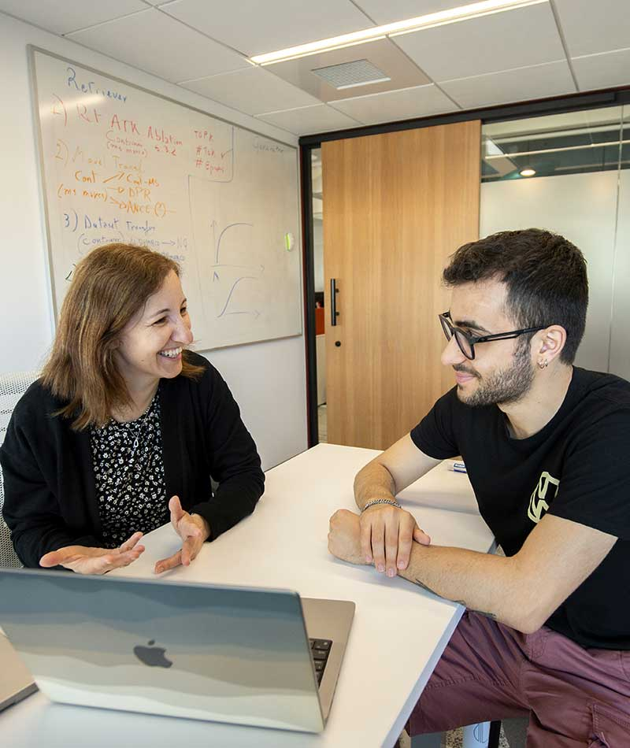
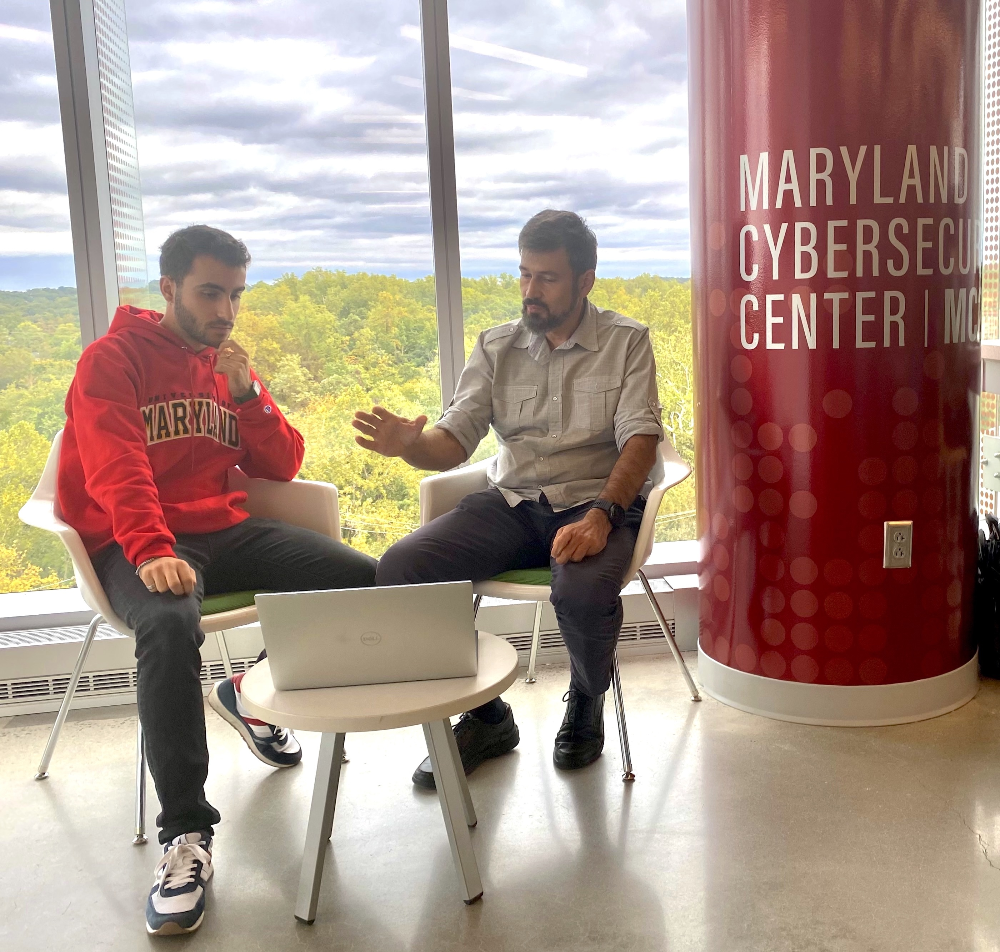
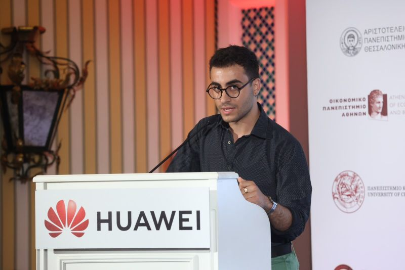
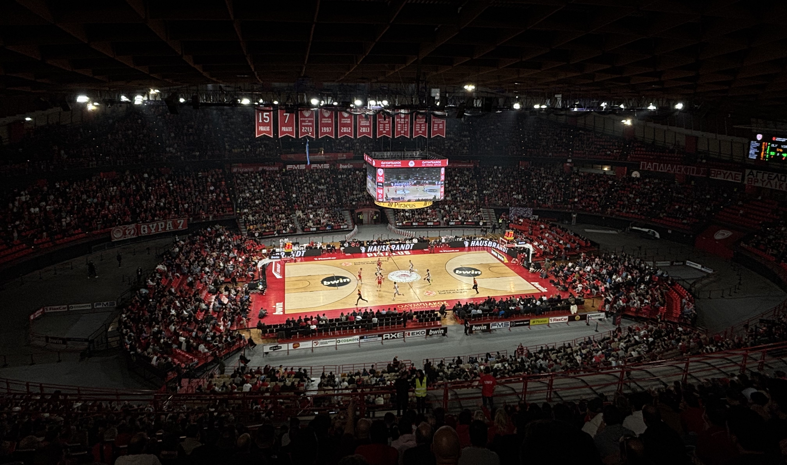

I play the guitar, enjoy hiking and I like anything that has an internal combustion engine (particularly 2-wheelers a.k.a. motorcycles). I am also a big supporter of Olympiacos Piraeus .
I grew up in Arachova, Greece.

Alina Oprea and I, Cybersecurity and Privacy Institute, Boston, MA

Tudor Dumitraș and I, Maryland Cybersecurity Center, College Park, MDMe on Mt. Washington, NH

Me giving a speech at HUAWEI Hellas Enterprise 2022 scholarship ceremony, Athens, Greece

Peace and Friendship Stadium, Piraeus, GreeceMe on my motorcycle